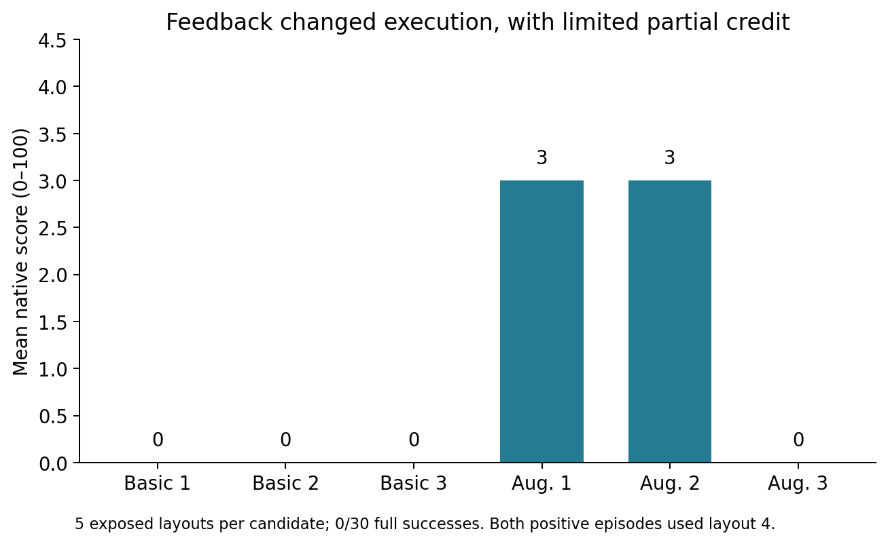
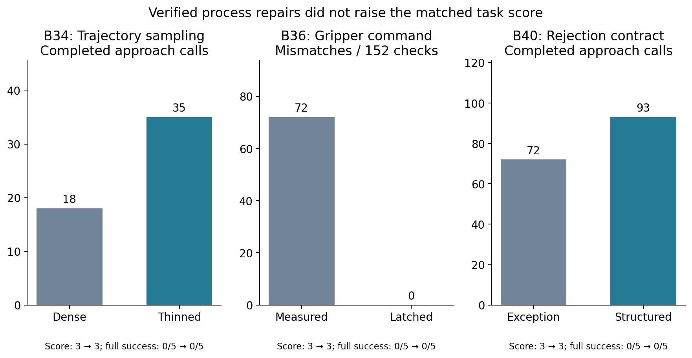
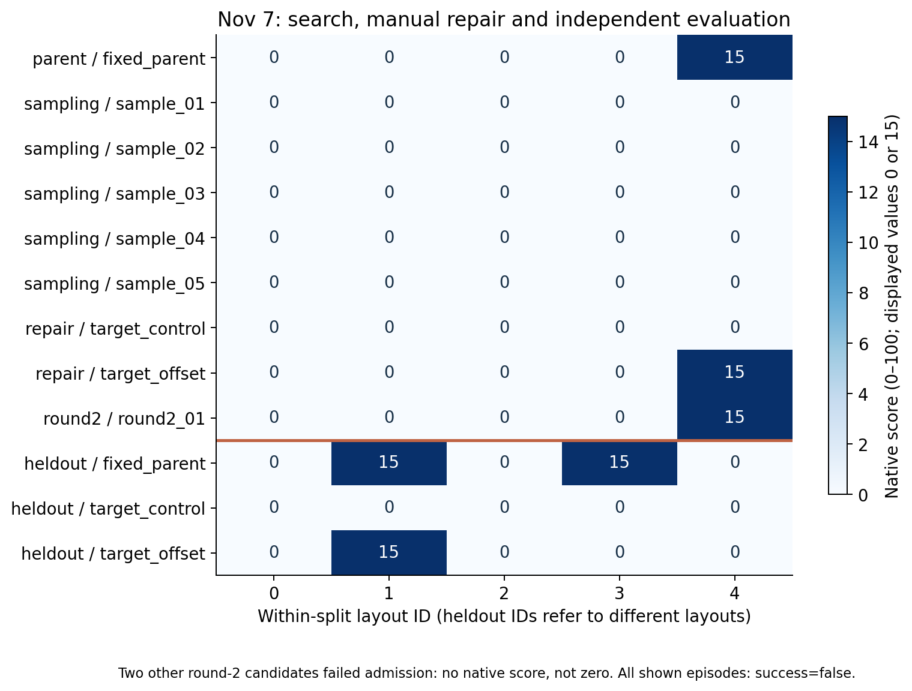
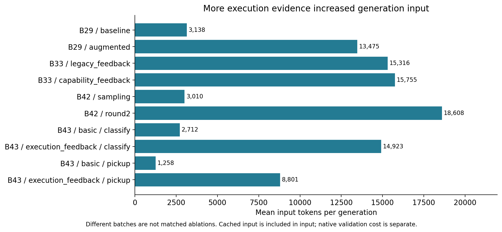
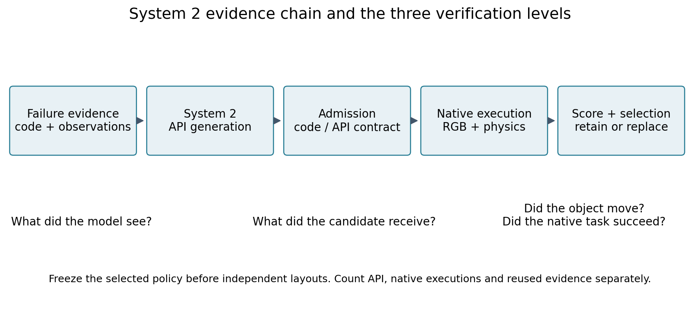
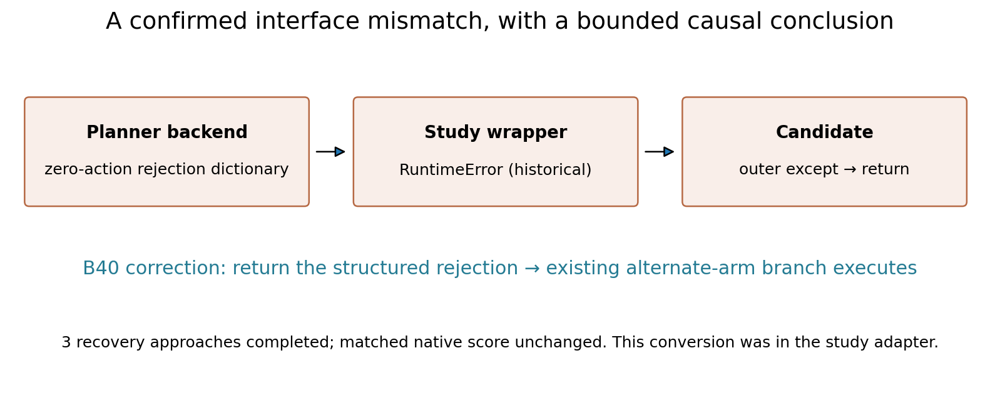
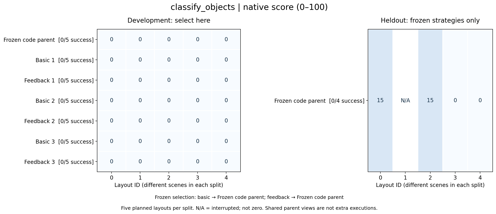
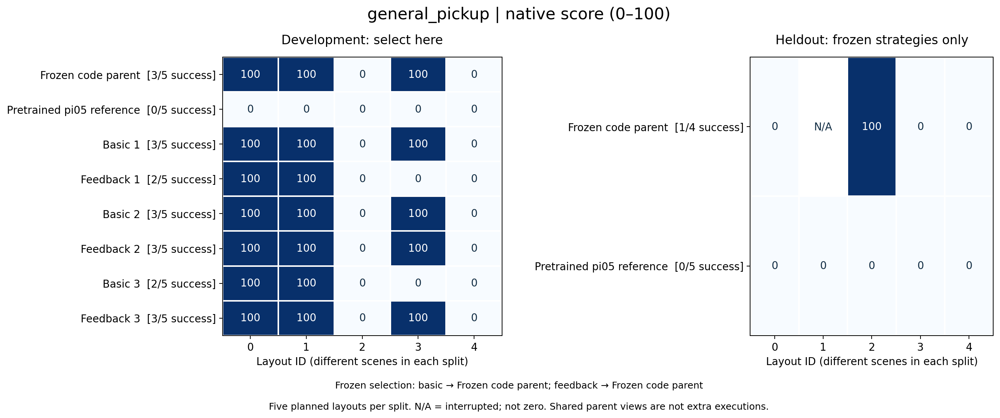
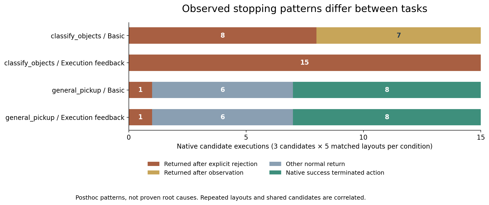

图表与可编辑数据
每张图同时保留PNG、带文字与矢量对象的SVG，以及绘图数据。统计范围与限制见图注。
F01_feedback_partial 增强反馈出现有限部分分

每候选仅5个已暴露布局，不能视为独立泛化。
来源：B31; derived/cohort_results_pre43.json
可编辑SVG · 图表数据JSONF02_process_vs_score 过程修正与任务得分分开报告

三个面板属于不同阶段，单位与执行条件不同；B40对照复用B39。
来源：B34/B36/B40 FINAL_SUMMARY.json
可编辑SVG · 图表数据JSONF03_nov7_score_matrix 11月7日逐布局结果

独立布局与开发ID相同但场景不同；未准入候选不填0。
来源：B42 original native receipts; derived/cohort_results_pre43.json
可编辑SVG · 图表数据JSONF04_generation_input 候选生成输入Token

跨批次反馈、模型推理设置与协议有差异；不可按时间作因果趋势。
来源：derived/api_by_condition.json; provider usage
可编辑SVG · 图表数据JSONF05_system2_evidence_chain System2证据链

概念流程图；不是声称已完成官方全量benchmark。
来源：Frozen protocols B29/B42/B43
可编辑SVG · 图表数据JSONF06_wrapper_correction 已确认的适配层问题

修复恢复分支不等于完成抓取，也不证明PhysicalRSI通用框架有同一错误。
来源：B40 HISTORICAL_CONTRACT_CORRECTION.txt and FINAL_SUMMARY.json
可编辑SVG · 图表数据JSONF07_classify_objects_multitask 分类任务的开发与独立布局结果

每split计划五布局。N/A为中断缺失原生终态分数，不填0；success分母仅完整评分回合。独立布局不用于选策略，共享父策略不重复执行。抓取要求抬升10cm，不等于分类搬运。
来源：B43 FINAL_SUMMARY and each phase analysis/summary.json
可编辑SVG · 图表数据JSONF08_general_pickup_multitask 抓取任务的开发与独立布局结果

每split计划五布局。N/A为中断缺失原生终态分数，不填0；success分母仅完整评分回合。独立布局不用于选策略，共享父策略不重复执行。抓取要求抬升10cm，不等于分类搬运。
来源：B43 FINAL_SUMMARY and each phase analysis/summary.json
可编辑SVG · 图表数据JSONF09_multitask_stop_patterns 多任务候选的停止模式

每组3候选×相同5开发布局；不是15个独立生成样本。正常return不等于成功，成功也会终止活动动作。这是停止现象，不是根因证明；未包含父策略及独立布局中断。
来源：B43原始RPC、native回执和同主机单调时间对应；见mechanism-audit.json
可编辑SVG · 图表数据JSON